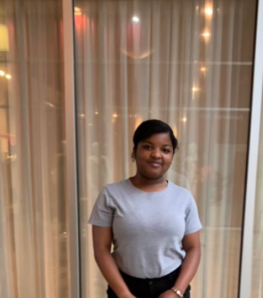

Sydney Moncur Web115-N801
Introduction

Me in the South End area
Personal background: Moved to Charlotte when I was three.
I am a middle college student and I started taking CPCC
courses in 2019. I am the youngest in my family and the
only pet I have owned was a betta fish.
Academic background: I attended all of my schooling in Charlotte. I am currently a 13th year A.K.A super senior middle college student because I decided to stay another year to finish my degree.
Background in this subject: The first time that I was exposed to coding was in the 6th grade. I signed up for the stem program so that I could take it with my orchestra class. I was able to take multiple courses that gave me a foundation in IT and engineering.
Primary Computer Platform: My main computer platform consists of whatever I am assigned to do for classes. I am most proficient with the Windows platform.
Courses I'm Taking & Why:
DBA-120-N801 - Database Programming I - I need this course to finish my degree program.
WEB-115-N801 - Web Markup and Scripting I need this course to finish my degree program
and I enjoy web development courses.
WEB-120-N801 - Intro to Internet Multimedia - I need this course to finish my degree program.
WEB-140-N801 - Web Development Tools - I need this course to finish my degree program.
WEB-210-N801 - Web Design - I enjoy the creativity that comes with this course and I also
need it for my degree program.
Funny/Interesting item about yourself: I have been playing the cello for 7 almost 8 years now.
I'd also like to share: Both of my parents were born in the Bahamas.
Github Account -
Github IO -
Github Course -
FreeCodeCamp -
Codecademy -
Khan Academy -
JSFiddle -
edX -
LinkedIn -